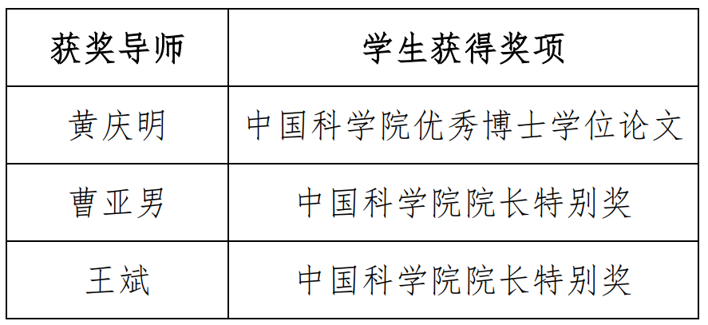

发布时间：2022年10月17日
近日，2022年度中国科学院优秀导师奖揭晓。中国科学院信息工程研究所黄庆明、曹亚男、王斌等3位研究生指导教师荣获该称号。获奖名单如下：

2022年，共有80人获中国科学院院长特别奖，100篇毕业生博士学位论文获得中国科学院优秀博士学位论文。按照《中国科学院院长奖管理办法》和《中国科学院优秀博士学位论文评选办法》有关规定，向院长特别奖获得者和院优秀博士学位论文作者的指导教师授予中国科学院优秀导师奖。